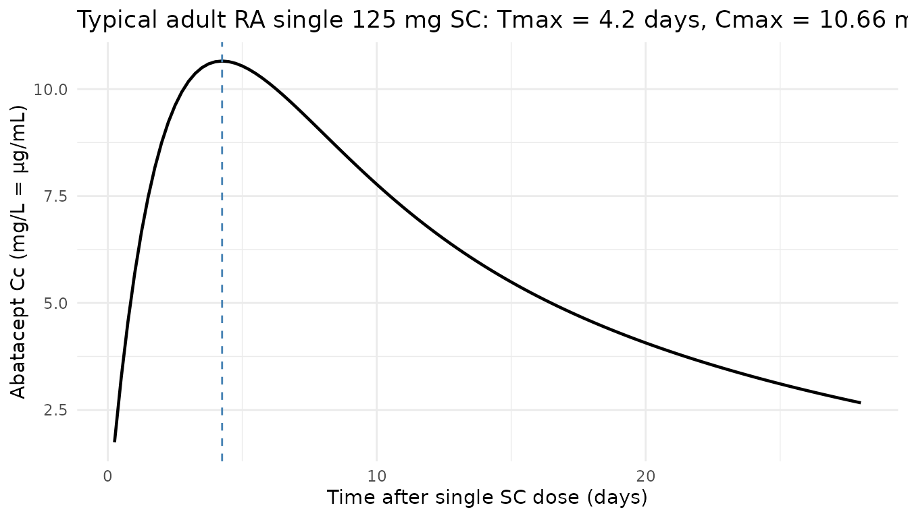
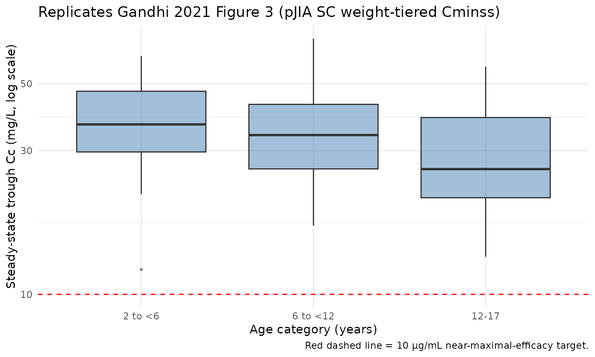
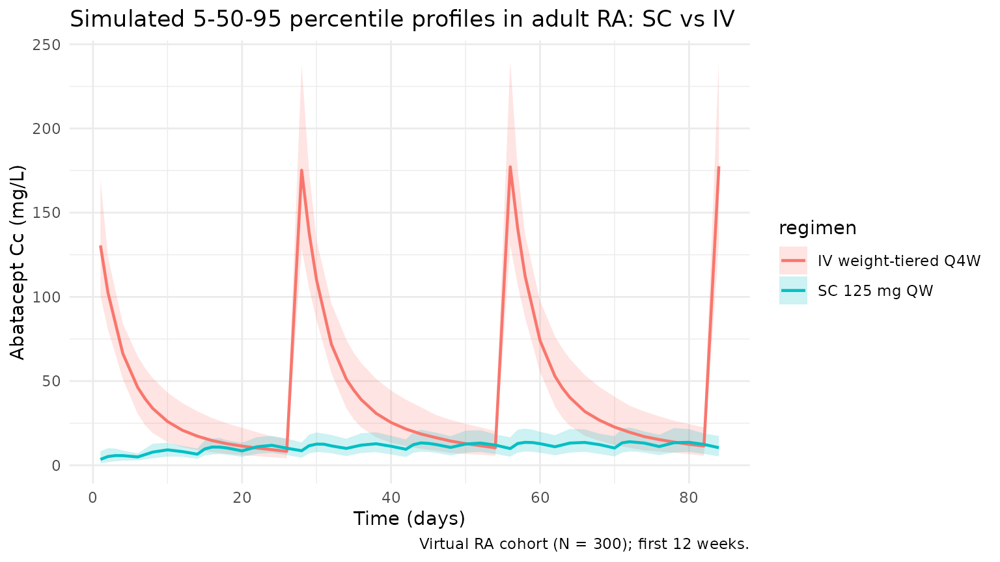

Abatacept (Gandhi 2021)
Source:vignettes/articles/Gandhi_2021_abatacept.Rmd
Gandhi_2021_abatacept.RmdModel and source
- Citation: Gandhi V, Sun H, Subramanian K, Lon HK, Roy A. Model-Based Selection and Recommendation for Subcutaneous Abatacept Dose in Patients With Polyarticular Juvenile Idiopathic Arthritis. J Clin Pharmacol. 2021 May;61(5):651-661. doi:10.1002/jcph.1781
- Description: Two-compartment population PK model for abatacept (CTLA4-Ig Fc-fusion) pooled across adults with rheumatoid arthritis and patients aged 2-17 years with polyarticular juvenile idiopathic arthritis (Gandhi 2021), with first-order SC absorption, zero-order IV infusion support, first-order linear elimination, logit-scale SC bioavailability with disease/age/weight covariates, and a KA parameterisation that enforces KA > k_el.
- Article: J Clin Pharmacol. 2021;61(5):651-661 (open access via PMC8359474)
Population
Gandhi 2021 pooled 13 phase 2/3 abatacept clinical studies into a final population PK dataset of 2 616 patients (12 759 abatacept serum concentrations): 2 213 adults with rheumatoid arthritis (RA) contributing 9 420 samples, and 403 patients aged 2-17 years with polyarticular juvenile idiopathic arthritis (pJIA) contributing 3 339 samples. Concentrations were quantified by validated ELISA (LLOQ 1.0 ng/mL); 8.7% of samples below LLOQ were excluded.
Gandhi 2021 used this pooled population PK model to select a weight-tiered weekly subcutaneous (SC) abatacept regimen for pJIA: 50 mg for patients < 25 kg, 87.5 mg for 25 to < 50 kg, and 125 mg for >= 50 kg, designed to deliver a steady-state trough concentration (Cminss) >= 10 µg/mL in > 90 % of patients across the 2-17 year age range. The selected regimen was subsequently confirmed in a phase 3 pJIA trial (130 of 131 evaluable patients met the Cminss target).
The same information is available programmatically via
readModelDb("Gandhi_2021_abatacept")$population.
Source trace
Every structural parameter, covariate effect, IIV element, and residual-error term below is taken from Gandhi 2021 Table 2 (final population PK model fitted to the expanded RA + pJIA dataset). Reference covariate values come from the Figure 1 caption: 49-year-old reference patient, baseline body weight 68 kg, albumin 4.1 g/dL, calculated GFR 99.18 mL/min/1.73 m², swollen joint count 15, not on NSAIDs. Male is the reference category for sex per the Methods text “for sex, male was used as the reference”; the reference patient’s female designation in Figure 1 is the visualization baseline used for the covariate-effect forest plot.
| Equation / parameter | Value | Source location |
|---|---|---|
lcl (CL) |
log(0.0179 * 24) L/day |
Table 2: CL = 0.0179 L/h |
lvc (VC) |
log(3.29) L |
Table 2: VC = 3.29 L |
lq (Q) |
log(0.0231 * 24) L/day |
Table 2: Q = 0.0231 L/h |
lvp (VP) |
log(3.67) L |
Table 2: VP = 3.67 L |
lka (KATV, relative absorption) |
log(0.00521 * 24) 1/day |
Table 2: KA = 0.00521 1/h (paper “L/h” is a units typo) |
logitfdepot (logit FTV,ref) |
1.20831 |
Table 2: F = 0.770; logit(0.770) = 1.20831 |
e_wt_cl ((WT/68)exp on CL) |
0.706 |
Table 2: Power of body weight on CL |
e_wt_vc ((WT/68)exp on VC) |
0.603 |
Table 2: Power of body weight on VC |
e_wt_vp ((WT/68)exp on VP) |
0.575 |
Table 2: Power of body weight on VP |
e_wt_f (slope of log(WT/68) on logit-F) |
-0.506 |
Table 2: Power of body weight on bioavailability |
e_age_vc ((AGE/49)exp on VC) |
0.114 |
Table 2: Power of age on VC |
e_age_f (slope of log(AGE/49) on logit-F) |
0.487 |
Table 2: Power of age on bioavailability |
e_alb_cl ((ALB/4.1)exp on CL) |
-0.722 |
Table 2: Power of albumin on CL |
e_crcl_cl ((CRCL/99.18)exp on CL) |
0.259 |
Table 2: Power of GFR on CL |
e_swol_cl (((SWOL+1)/16)exp on CL) |
0.0742 |
Table 2: Power of SJC on CL |
e_sexf_cl (exp(SEXF·coef) on CL) |
0.0674 |
Table 2: Exponent of male sex on CL |
e_nsaid_cl (exp(CONMED_NSAID·coef) on CL) |
0.102 |
Table 2: Exponent of NSAID on CL |
e_jia_f (additive on logit-F for DIS_PJIA=1) |
3.08 |
Table 2: Exponent of JIA on bioavailability |
var(etalka) |
1.11 |
Table 2 IIV/residual column, KA row |
var(etalvc) |
0.0464 |
Table 2 IIV/residual column, VC row |
var(etalcl) |
0.0637 |
Table 2 IIV/residual column, CL row |
var(etalvp) |
0.154 |
Table 2 IIV/residual column, VP row |
var(etalogitfdepot) |
0.516 |
Table 2 IIV/residual column, F row |
propSd (= sqrt(SIGMAPROP)) |
sqrt(0.0615) ≈ 0.248 |
Table 2 IIV/residual column: Proportional residual error = 0.0615 (variance) |
addSd (= sqrt(SIGMAADD)) |
sqrt(0.00134) ≈ 0.0366 mg/L |
Table 2 IIV/residual column: Additive residual error = 0.00134 (mg²/L² variance) |
| Structure (2-cmt + first-order SC / instantaneous IV input + logit-F + KA > kel constraint + combined residual error) | n/a | Methods, Population PK Analysis section, paragraphs on equations S1 and S2 |
Parameterization notes
-
Time-unit conversion. Gandhi 2021 reports
CLandQin L/h andKAin 1/h (the published Table 2 row header “KA (L/h)” is a units typo for the rate constant). The nlmixr2lib convention is time in days, so each of these values is multiplied by 24 insidelog(...)inini(). -
Logit-F parameterisation. Gandhi 2021 constrains
absolute bioavailability to (0, 1) via an inverse-logit link (Methods
Eq. S1):
F_abs = 1 / (1 + exp(-F_TV))withF_TV = logitfdepot + etalogitfdepot + DIS_PJIA * e_jia_f + e_wt_f * log(WT/68) + e_age_f * log(AGE/49). The reference valuelogitfdepot = 1.20831givesF_abs ≈ 0.770for the adult RA reference patient (68 kg, 49 yr). For a typical pJIA patient the +3.08 disease shift drives logit-F to ≈ 4.288, i.e.F_abs ≈ 0.987. -
KA > kel constraint. Gandhi 2021
Methods Eq. S2 reparameterises absorption as
KA_i = KA_TV * exp(etaKA) + k_el,iwithk_el,i = CL_i / VC_i, to prevent flip-flop of parameter estimates during fitting. The model file implements this verbatim. With typical-value parameters (KA_TV * 24 = 0.12504 1/day,k_el = 0.4296 / 3.29 ≈ 0.131 1/day), the effective absorption rate constant is ≈ 0.256 1/day (half-life ≈ 2.7 days), giving an SCTmaxnear 5 days that matches abatacept SC label values. - Independent IIVs. The paper does not report a full IIV variance-covariance block (unlike Li 2019, which does). The IIVs are treated as independent here, matching the Table 2 layout where each ETA carries its own variance and shrinkage value.
-
Residual error reported as variance. Gandhi 2021
Table 2 reports the SIGMA matrix variances in the same “Estimate” column
as the IIV variances (see Errata below for the rationale). The
proportional and additive variances are converted to standard deviations
by
sqrt()for nlmixr2’sadd()/prop()conventions:propSd = sqrt(0.0615) ≈ 0.248andaddSd = sqrt(0.00134) ≈ 0.0366 mg/L.
Virtual cohort
The simulations below use a virtual cohort whose covariate distributions approximate the Gandhi 2021 study populations (Table S1 listing the 13 phase 2/3 contributing studies is not embedded in the PMC full text). Subject-level observed data were not released with the paper.
set.seed(20260425)
# Adult RA cohort
n_ra <- 300
ra <- tibble::tibble(
id = seq_len(n_ra),
WT = pmin(pmax(rnorm(n_ra, mean = 70, sd = 18), 40, 160)),
AGE = pmin(pmax(rnorm(n_ra, mean = 49, sd = 13), 18, 90)),
ALB = pmin(pmax(rnorm(n_ra, mean = 4.1, sd = 0.35), 2.5, 5.0)),
CRCL = pmin(pmax(rnorm(n_ra, mean = 99, sd = 25), 30, 180)),
SWOL_28JOINT = pmin(pmax(round(rnorm(n_ra, mean = 15, sd = 6)), 0, 28)),
SEXF = rbinom(n_ra, 1, 0.78), # RA cohorts ~75-80% female
CONMED_NSAID = rbinom(n_ra, 1, 0.55),
DIS_PJIA = 0L,
cohort = "RA"
)
# Pediatric pJIA cohort spanning 2-17 years and the 3 weight-tier groups.
n_pjia <- 200
pjia <- tibble::tibble(
id = seq.int(from = n_ra + 1, length.out = n_pjia),
AGE = runif(n_pjia, 2, 17),
WT = pmax(pmin(8 + (AGE - 2) * 4 + rnorm(n_pjia, 0, 6), 100), 8),
ALB = pmin(pmax(rnorm(n_pjia, mean = 4.1, sd = 0.4), 2.5, 5.0)),
CRCL = pmin(pmax(rnorm(n_pjia, mean = 110, sd = 25), 60, 200)),
SWOL_28JOINT = pmin(pmax(round(rnorm(n_pjia, mean = 6, sd = 4)), 0, 28)),
SEXF = rbinom(n_pjia, 1, 0.70), # pJIA cohorts skew female
CONMED_NSAID = rbinom(n_pjia, 1, 0.40),
DIS_PJIA = 1L,
cohort = "pJIA"
)
pjia <- pjia |>
dplyr::mutate(
pjia_dose = dplyr::case_when(
WT < 25 ~ 50,
WT < 50 ~ 87.5,
TRUE ~ 125
)
)Three regimens are simulated:
- Adult RA, 125 mg SC QW — the approved adult SC regimen (DIS_PJIA = 0).
- pJIA weight-tiered SC QW — 50 mg for < 25 kg, 87.5 mg for 25 to < 50 kg, 125 mg for >= 50 kg (Gandhi 2021 Tables; DIS_PJIA = 1).
- Adult RA weight-tiered ~10 mg/kg IV Q4W — 500 mg if < 60 kg, 750 mg if 60-100 kg, 1000 mg if > 100 kg (the approved IV dosing recommendation).
tau_sc <- 7 # SC QW
tau_iv <- 28 # IV Q4W
n_sc <- 26 # 26 weekly doses -> 182 days, deeply into SS
n_iv <- 7 # 7 q4w doses -> 196 days
dose_days_sc <- seq(0, tau_sc * (n_sc - 1), by = tau_sc)
dose_days_iv <- seq(0, tau_iv * (n_iv - 1), by = tau_iv)
ra_iv <- ra |>
dplyr::mutate(
amt_iv = dplyr::case_when(
WT < 60 ~ 500,
WT <= 100 ~ 750,
TRUE ~ 1000
)
)
build_sc_events <- function(cohort_df, dose_days, treatment, dose_col = NULL,
fixed_amt = NULL) {
ev_dose <- cohort_df |>
tidyr::crossing(time = dose_days) |>
dplyr::mutate(
amt = if (!is.null(fixed_amt)) fixed_amt else .data[[dose_col]],
cmt = "depot", evid = 1L, treatment = treatment
)
obs_days <- sort(unique(c(seq(0, max(dose_days) + tau_sc, by = 1),
dose_days + 1, dose_days + 3)))
ev_obs <- cohort_df |>
tidyr::crossing(time = obs_days) |>
dplyr::mutate(amt = 0, cmt = NA_character_, evid = 0L, treatment = treatment)
dplyr::bind_rows(ev_dose, ev_obs) |>
dplyr::arrange(id, time, dplyr::desc(evid))
}
build_iv_events <- function(cohort_iv, dose_days, treatment) {
ev_dose <- cohort_iv |>
tidyr::crossing(time = dose_days) |>
dplyr::mutate(amt = amt_iv, cmt = "central", evid = 1L, treatment = treatment)
obs_days <- sort(unique(c(seq(0, max(dose_days) + tau_iv, by = 1),
dose_days + 1, dose_days + 7)))
ev_obs <- cohort_iv |>
tidyr::crossing(time = obs_days) |>
dplyr::mutate(amt = 0, cmt = NA_character_, evid = 0L, treatment = treatment)
dplyr::bind_rows(ev_dose, ev_obs) |>
dplyr::arrange(id, time, dplyr::desc(evid))
}
events_ra_sc <- build_sc_events(ra, dose_days_sc, "RA_SC_125_QW",
fixed_amt = 125)
events_pjia_sc <- build_sc_events(pjia, dose_days_sc, "pJIA_SC_weight_tiered",
dose_col = "pjia_dose")
events_ra_iv <- build_iv_events(ra_iv, dose_days_iv, "RA_IV_weight_tiered_Q4W")Simulation
mod <- rxode2::rxode2(readModelDb("Gandhi_2021_abatacept"))
keep_cols <- c("WT", "AGE", "ALB", "CRCL", "SWOL_28JOINT",
"SEXF", "CONMED_NSAID", "DIS_PJIA", "cohort", "treatment")
sim_ra_sc <- as.data.frame(rxode2::rxSolve(mod, events = events_ra_sc,
keep = keep_cols))
sim_pjia_sc <- as.data.frame(rxode2::rxSolve(mod, events = events_pjia_sc,
keep = keep_cols))
sim_ra_iv <- as.data.frame(rxode2::rxSolve(mod, events = events_ra_iv,
keep = keep_cols))
sim <- dplyr::bind_rows(sim_ra_sc, sim_pjia_sc, sim_ra_iv)Replicate published figures
SC absorption Tmax in a typical adult RA patient
Gandhi 2021 Methods Eq. S2 reparameterises KA to ensure KA >
kel. The effective absorption rate constant for a typical
adult RA patient is
KA_TV + k_el = 0.00521 * 24 + 0.0179 * 24 / 3.29 ≈ 0.256 1/day,
giving an SC absorption half-life of ≈ 2.7 days and a single-dose Tmax
near 5 days — consistent with the abatacept SC label.
mod_typ <- mod |> rxode2::zeroRe()
typ_cov <- tibble::tibble(
id = 1L, WT = 68, AGE = 49, ALB = 4.1, CRCL = 99.18,
SWOL_28JOINT = 15, SEXF = 0L, CONMED_NSAID = 0L, DIS_PJIA = 0L
)
ev_single_sc <- typ_cov |>
tidyr::crossing(time = c(0, seq(0.25, 28, by = 0.25))) |>
dplyr::mutate(
amt = ifelse(time == 0, 125, 0),
cmt = ifelse(time == 0, "depot", NA_character_),
evid = ifelse(time == 0, 1L, 0L)
) |>
dplyr::arrange(id, time, dplyr::desc(evid))
sim_single_sc <- as.data.frame(rxode2::rxSolve(mod_typ, events = ev_single_sc))
#> ℹ omega/sigma items treated as zero: 'etalka', 'etalvc', 'etalcl', 'etalvp', 'etalogitfdepot'
tmax_day <- sim_single_sc$time[which.max(sim_single_sc$Cc)]
cmax_mgL <- max(sim_single_sc$Cc)
ggplot(sim_single_sc, aes(time, Cc)) +
geom_line(linewidth = 0.8) +
geom_vline(xintercept = tmax_day, linetype = "dashed", colour = "steelblue") +
labs(
x = "Time after single SC dose (days)",
y = "Abatacept Cc (mg/L = µg/mL)",
title = sprintf("Typical adult RA single 125 mg SC: Tmax = %.1f days, Cmax = %.2f mg/L",
tmax_day, cmax_mgL)
) +
theme_minimal()
pJIA Cminss by age category (replicates Figure 3)
Gandhi 2021 Figure 3 plots the predicted distribution of steady-state trough concentration (Cminss) following SC and IV abatacept in pJIA patients, stratified by age category (2-<6, 6-<12, 12-17 years). The paper states the SC Cminss in pJIA is approximately 3-fold higher than the IV Cminss, and the Cminss exceeds the 10 µg/mL near-maximal efficacy target.
ss_start_sc <- tau_sc * (n_sc - 1)
ss_end_sc <- ss_start_sc + tau_sc
trough_pjia <- sim_pjia_sc |>
dplyr::filter(time == ss_start_sc + tau_sc) |>
dplyr::mutate(age_grp = cut(AGE, breaks = c(2, 6, 12, 17.001),
right = FALSE,
labels = c("2 to <6", "6 to <12", "12-17"),
include.lowest = TRUE))
ggplot(trough_pjia, aes(age_grp, Cc)) +
geom_boxplot(fill = "steelblue", alpha = 0.5, outlier.size = 0.6) +
geom_hline(yintercept = 10, linetype = "dashed", colour = "red") +
scale_y_log10() +
labs(
x = "Age category (years)",
y = "Steady-state trough Cc (mg/L, log scale)",
title = "Replicates Gandhi 2021 Figure 3 (pJIA SC weight-tiered Cminss)",
caption = "Red dashed line = 10 µg/mL near-maximal-efficacy target."
) +
theme_minimal()
SC vs IV concentration-time profiles in adult RA
vpc_ra <- dplyr::bind_rows(
sim_ra_sc |> dplyr::mutate(regimen = "SC 125 mg QW"),
sim_ra_iv |> dplyr::mutate(regimen = "IV weight-tiered Q4W")
) |>
dplyr::filter(!is.na(Cc), time > 0, time <= 84) |>
dplyr::group_by(regimen, time) |>
dplyr::summarise(
Q05 = quantile(Cc, 0.05, na.rm = TRUE),
Q50 = quantile(Cc, 0.50, na.rm = TRUE),
Q95 = quantile(Cc, 0.95, na.rm = TRUE),
.groups = "drop"
)
ggplot(vpc_ra, aes(time, Q50, colour = regimen, fill = regimen)) +
geom_ribbon(aes(ymin = Q05, ymax = Q95), alpha = 0.2, colour = NA) +
geom_line(linewidth = 0.8) +
labs(
x = "Time (days)",
y = "Abatacept Cc (mg/L)",
title = "Simulated 5-50-95 percentile profiles in adult RA: SC vs IV",
caption = "Virtual RA cohort (N = 300); first 12 weeks."
) +
theme_minimal()
PKNCA validation
Non-compartmental analysis of the steady-state SC and IV dosing
intervals. PKNCA computes per-subject Cmax, Cmin,
Cavg, and AUCtau. Two PKNCA blocks are run (one
per regimen-cohort grouping) so that each formula carries
id/treatment per the skill’s PKNCA recipe.
nca_conc_pjia <- sim_pjia_sc |>
dplyr::filter(time >= ss_start_sc, time <= ss_end_sc, !is.na(Cc)) |>
dplyr::mutate(time_nom = time - ss_start_sc) |>
dplyr::select(id, time = time_nom, Cc, treatment)
nca_dose_pjia <- pjia |>
dplyr::mutate(time = 0, amt = pjia_dose, treatment = "pJIA_SC_weight_tiered") |>
dplyr::select(id, time, amt, treatment)
conc_obj_pjia <- PKNCA::PKNCAconc(nca_conc_pjia, Cc ~ time | treatment + id)
dose_obj_pjia <- PKNCA::PKNCAdose(nca_dose_pjia, amt ~ time | treatment + id)
intervals_sc <- data.frame(start = 0, end = tau_sc,
cmax = TRUE, cmin = TRUE, tmax = TRUE,
auclast = TRUE, cav = TRUE)
nca_pjia <- PKNCA::pk.nca(PKNCA::PKNCAdata(conc_obj_pjia, dose_obj_pjia,
intervals = intervals_sc))
summary(nca_pjia)
#> start end treatment N auclast cmax cmin
#> 0 7 pJIA_SC_weight_tiered 200 250 [33.4] 40.8 [29.1] 29.0 [43.2]
#> tmax cav
#> 2.00 [1.00, 3.00] 35.7 [33.4]
#>
#> Caption: auclast, cmax, cmin, cav: geometric mean and geometric coefficient of variation; tmax: median and range; N: number of subjects
nca_conc_ra <- sim_ra_sc |>
dplyr::filter(time >= ss_start_sc, time <= ss_end_sc, !is.na(Cc)) |>
dplyr::mutate(time_nom = time - ss_start_sc) |>
dplyr::select(id, time = time_nom, Cc, treatment)
nca_dose_ra <- ra |>
dplyr::mutate(time = 0, amt = 125, treatment = "RA_SC_125_QW") |>
dplyr::select(id, time, amt, treatment)
conc_obj_ra <- PKNCA::PKNCAconc(nca_conc_ra, Cc ~ time | treatment + id)
dose_obj_ra <- PKNCA::PKNCAdose(nca_dose_ra, amt ~ time | treatment + id)
nca_ra <- PKNCA::pk.nca(PKNCA::PKNCAdata(conc_obj_ra, dose_obj_ra,
intervals = intervals_sc))
summary(nca_ra)
#> start end treatment N auclast cmax cmin
#> 0 7 RA_SC_125_QW 300 95.9 [35.4] 15.4 [31.7] 11.1 [45.5]
#> tmax cav
#> 2.00 [1.00, 3.00] 13.7 [35.4]
#>
#> Caption: auclast, cmax, cmin, cav: geometric mean and geometric coefficient of variation; tmax: median and range; N: number of subjectsComparison against the Gandhi 2021 Cminss >= 10 µg/mL benchmark
Gandhi 2021 reports that the selected weight-tiered subcutaneous regimen delivered Cminss >= 10 µg/mL in 130 of 131 evaluable pJIA patients across the 2-17 year age range — i.e. > 99 %. The cohort-fraction check below is a direct numerical replicate of that claim against the virtual pJIA cohort.
pct_above_pjia <- trough_pjia |>
dplyr::group_by(age_grp) |>
dplyr::summarise(
N = dplyr::n(),
pct_ge_10_mgL = 100 * mean(Cc >= 10, na.rm = TRUE),
median_Cmin = median(Cc),
.groups = "drop"
)
knitr::kable(pct_above_pjia, digits = 1,
caption = "Fraction of virtual pJIA subjects achieving steady-state Cmin >= 10 mg/L on the weight-tiered SC regimen (Gandhi 2021: 130/131 = 99.2%).")| age_grp | N | pct_ge_10_mgL | median_Cmin |
|---|---|---|---|
| 2 to <6 | 53 | 100.0 | 34.4 |
| 6 to <12 | 87 | 97.7 | 29.0 |
| 12-17 | 60 | 98.3 | 27.7 |
trough_ra <- sim_ra_sc |>
dplyr::filter(time == ss_start_sc + tau_sc) |>
dplyr::mutate(wt_grp = cut(WT, breaks = c(-Inf, 60, 100, Inf),
labels = c("<60 kg", "60-100 kg", ">100 kg")))
pct_above_ra <- trough_ra |>
dplyr::group_by(wt_grp) |>
dplyr::summarise(
N = dplyr::n(),
pct_ge_10_mgL = 100 * mean(Cc >= 10, na.rm = TRUE),
median_Cmin = median(Cc),
.groups = "drop"
)
knitr::kable(pct_above_ra, digits = 1,
caption = "Fraction of virtual adult RA subjects achieving steady-state Cmin >= 10 mg/L on 125 mg SC QW (Gandhi 2021: comparable to IV ~10 mg/kg Q4W).")| wt_grp | N | pct_ge_10_mgL | median_Cmin |
|---|---|---|---|
| >100 kg | 300 | 61.7 | 11.3 |
Assumptions and deviations
-
Time-unit rescaling. Gandhi 2021 reports CL, Q, and
KA in per-hour units; the model file converts each to per-day by the
factor of 24 to match the nlmixr2lib
units$time = "day"convention. VC, VP, F, IIV variances, and residual-error magnitudes carry through unchanged. - KA “L/h” units typo. Gandhi 2021 Table 2 lists KA’s units as “L/h”, but KA is a first-order absorption rate constant with units of 1/time. The model file treats KA as 1/h (then converts to 1/day) consistent with the rest of Methods (Eq. S2 expresses KA as a sum of rate constants).
-
SJC 28-joint scale assumed. Gandhi 2021 reports a
swollen joint count covariate (SJC) with reference value 15 but does not
explicitly identify the joint-count scale. Per operator decision, the
canonical
SWOL_28JOINTis used because (1) the same author group used the 28-joint count in the prior Li 2019 RA-only analysis, (2) the reference value 15 is consistent with the 28-joint scale’s 0-28 range, and (3) pediatric pJIA patients are a minority of the pooled cohort (403/2616 ≈ 15 %). -
Sex covariate direction. Gandhi 2021 Methods state
“for sex, male was used as the reference”; the model codes
SEXF = 1for female and applies the published Table 2 coefficient+0.0674asexp(SEXF * 0.0674), so females have ≈ 7 % higher CL than males. The sign is opposite to Li 2019 (-0.0722for SEX in the RA-only cohort); the dataset expansion to pJIA in Gandhi 2021 produced the sign flip. Convention follows the existing Li 2019 implementation in nlmixr2lib. -
Independent IIVs (no full block). Gandhi 2021 Table
2 reports each ETA’s variance and shrinkage independently, with no
variance-covariance block reported in the paper text. The model treats
the IIVs as independent. Li 2019 (the same group’s prior model) did
report a 4×4 full block on
etalcl + etalvc + etalq + etalvp, so users who want a closer match to the Li 2019 covariance structure can override the IIV block downstream. - pJIA-on-CL not retained. Gandhi 2021 explicitly states that “Disease (pJIA vs RA) did not have a clinically relevant effect on abatacept CL” and the final-model Table 2 does not include a JIA effect on CL. The pJIA covariate enters the bioavailability submodel only.
- Virtual-cohort covariate distributions. Table S1 (the per-study demographic summary) is referenced in the paper but is not embedded in the PMC full text, so the virtual-cohort distributions are approximate. Adult RA: WT ~ N(70, 18), AGE ~ N(49, 13), ALB ~ N(4.1, 0.35), CRCL ~ N(99, 25), SWOL_28JOINT ~ rounded N(15, 6), SEXF = 78 % female, CONMED_NSAID = 55 %. pJIA: AGE uniform on [2, 17], WT linearly scaled with age plus noise (8 + 4·(AGE-2) ± 6 kg), SEXF = 70 % female. The reference covariate values match the Gandhi 2021 Figure 1 caption; the dispersions approximate a typical phase 3 RA / pJIA cohort.
-
IV as instantaneous bolus. Gandhi 2021 administers
IV abatacept as a 30-minute infusion. This simulation treats IV doses as
an instantaneous bolus to
central, which slightly overstates the early post-dose Cmax but has no effect on AUC, trough, or half-life estimates. Users wanting exact infusion kinetics should setrate(ordur) in the rxode2 event table. - No subject-level observed data. Gandhi 2021 does not release individual subject data; the figures reported here are a pure forward simulation of the published final-model parameters against the virtual cohort.
Errata
The published Gandhi 2021 paper contains one ambiguity that a reviewer re-reading the source alongside this model should be aware of:
-
Residual error scale (Table 2). Gandhi 2021 Table 2
reports the proportional and additive residual errors (0.0615 and
0.00134) in the same “Estimate” column that carries the IIV variances
for each ETA. The IIV column entries are unambiguously variances
(
var(etalka) = 1.11is too large to be a SD), so by symmetry the residual-error entries are likely SIGMA (variance) values too. Per operator decision, this model treats the residual errors as variances and converts to SDs viasqrt():propSd = sqrt(0.0615) ≈ 0.248(24.8 % proportional error) andaddSd = sqrt(0.00134) ≈ 0.0366 mg/L(≈ 37 ng/mL additive). The alternative interpretation — SDs directly, matching the Li 2019 nlmixr2lib convention from the same author group — would givepropSd = 0.0615(6.15 %) andaddSd = 0.00134 mg/L(1.34 ng/mL), which is unusually tight for a biologic but plausible given Gandhi 2021’s larger and more richly-covariated dataset. The paper does not explicitly label the residual-error column as variance vs SD; without the supplement (control stream) on disk this cannot be disambiguated beyond the column-symmetry argument used here. If a future reader obtains the supplement and the residual-error parameterisation conflicts with this interpretation, thepropSd/addSdlines inini()should be updated. - No formal erratum. A search of PubMed and the J Clin Pharmacol corrections feed on 2026-04-25 returned no published corrections.